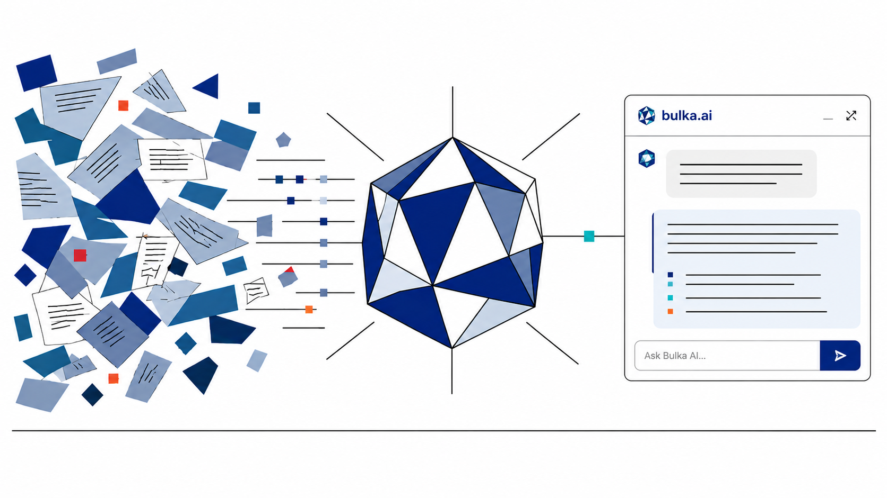

Denis Stark
Co-founder & CEO
28 years in payments. Issuing and acquiring at Shift4, Network International, Worldline. Built and led card-ops, implementation, and product teams across three continents.
LinkedIn →For fintechs in issuing, acquiring, and PSP. Pre-trained on Visa/Mastercard rules, scheme dispute mechanics, and the regulations that touch your stack. Calibrated to your runbooks in days — not quarters.

Card operations sit between compliance, ops, and IT — and no single team owns the fix. Volume grows; the expert who knows Reg E timelines, scheme dispute codes, and your own runbooks doesn't.
Bulka.AI plugs into Slack, Teams, and your ticketing system. It answers questions and drafts responses using your runbooks, scheme manuals, regional regulations, and ticket history — every answer cited to source.
Instant cited answers on scheme rules, regional regulations (Reg E/Z, BSA, PSD2, local equivalents), and your internal procedures. No more "let me get back to you tomorrow."
Reject resolution, ticket triage, and routing. The AI drafts the response; your analyst approves and sends.
Visa, Mastercard, and regulator bulletins triaged against your card products and BIN configuration — what applies to you, what doesn't, what action is required.
Every question, every answer, every source — searchable, exportable, formatted for scheme audits or regulator review.
Reject resolution and ticket triage. AI drafts the response to Visa/Mastercard rejects, citing the relevant scheme rule.
Reg E and scheme-rules Q&A. Dispute timelines, BSA typologies, chargeback reason codes — answered with citation, not opinion.
Change-scope analysis. Scheme releases mapped to your products and BIN ranges.
Searchable, exportable audit trail of every AI-assisted decision.
Requirement analysis and effort estimation against existing platform capabilities.
Triage suspicious transactions against scheme rules and known typologies. Surface precedent cases from your own ticket history.
A worked example using only publicly documented Mastercard chargeback rules — what an analyst would see in Slack or Teams.
For Mastercard reason code 4837 (No Cardholder Authorization), here is what the issuer needs to process the chargeback:
Important: all supporting documentation must be legible and linked to the case filing. Any documentation required but not provided in the chargeback will not be considered if the dispute escalates to arbitration.
Source: Mastercard Chargeback Guide — Reason Code 4837
Figures are from early pilots with small teams. Outcomes scale with team size, use-case mix, and how mature your documentation already is — we'll size yours during the discovery call.
For fintechs, we contract directly — standard MSA, no surprises.
For banks and larger processors, new-vendor onboarding can take months: TPRM review, SIG questionnaires, MSA negotiation, security review. If you already have an MSA with a firm that can prime AI engagements, we deliver as their subcontractor — no new MSA, no net-new TPRM scope.
60 days
Flat monthly subscription, sized to your team. Pilot pricing for small teams starts at $5K/month.
2–3 SMEs for ~4 hours of calibration, one operational team as the test group, sandbox or read-only access to relevant systems, your scheme manuals and runbooks.
Configured AI assistant in your workflow, baseline measurement of current resolution time, weekly progress reports, a final ROI report with verified productivity delta — and a no-pressure go/no-go at week 8.
Four co-founders, 70+ years combined in payments — across issuing, acquiring, PSP, and every major card management platform.
28 years in payments. Issuing and acquiring at Shift4, Network International, Worldline. Built and led card-ops, implementation, and product teams across three continents.
LinkedIn →Leads core AI development. 19 years in payments, with a focus on agentic AI and cybersecurity — building AI systems that hold up under regulated workloads.
LinkedIn →Leads platform engineering, DevOps, and integrations — including the applied-AI components that connect Bulka.AI to client systems. 12 years at OpenWay and BPC building and operating the platforms your teams use today. 3 years at IBM.
LinkedIn →Issuing/acquiring implementations and platform migrations. 15 years in payments at Network International and Nexi. 30+ CMS implementations and 40+ portfolio migrations across the team.
LinkedIn →60 days. One team. One use case. Measurable results.